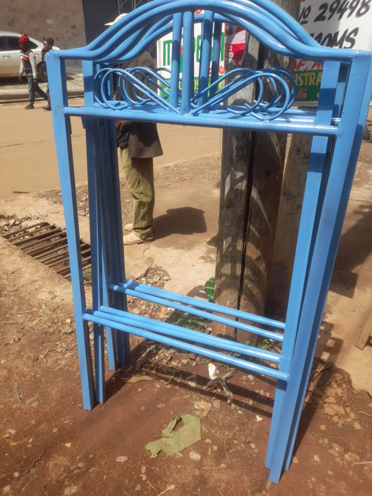

Projecten › Outreach Kenia
Outreach Kenia 2022 & vervolg 2024 Afgerond
In juli 2022 reisde een groep jongeren met hun leiding naar Kiminini om geestelijk en praktisch aan de slag te gaan. In september 2024 kreeg deze bijzondere reis een vervolg.
Update 2026. Het project is inmiddels helemaal afgerond. Het dak dat we op het kerkgebouw hebben gerealiseerd, heeft de afgelopen jaren goed doorstaan: constructief in orde en geen lekkages. Uit deze outreach is bovendien een blijvend project voortgekomen: de sponsoring van tienerstudenten. De eerste student die we toen onder onze hoede namen, heeft zijn middelbare school inmiddels afgerond.

Vervolg in september 2024
In 2023 kwam langzaam het verlangen om aan de reis van 2022 een vervolg te geven. Na de nodige voorbereidingen is dit gebeurd in september 2024. De ouders, tevens leiding van de toenmalige jeugdgroep, hebben opnieuw een bezoek gebracht aan Kiminini. Wat was het mooi om de mensen daar weer te ontmoeten en te zien hoe zij het project „Verder bouwen van de kerk” handen en voeten aan het geven waren. Het is nog niet af, maar dat is een kwestie van tijd.
Voor de hele kerkelijke gemeenschap hebben we een maaltijd georganiseerd: aansluitend aan een dienst hebben we met zo'n 80 tot 100 personen samen gegeten. Daarbij hebben we ook traktaten uitgedeeld: strips waarin gelijkenissen uit de Bijbel worden uitgelegd in het Swahili.
Waar we de vorige reis kinderschoenen hadden meegenomen naar Kenia, hadden de dames het deze keer op hun hart om bh's te verzamelen en mee te nemen. Zo gezegd, zo gedaan: een aantal maanden hebben we vooral via onze kerkelijke gemeenschap bh's ingezameld en deze uitgedeeld in Kiminini. Wat een feest was dat!
Tijdens dit bezoek zijn ook het naaiatelier en het maïsproject (inmiddels afgerond) bezocht en bijgestuurd.
Reisverslag 2022
Laatst bijgewerkt: 27 april 2022
De reis naar Kenia zit er nu echt aan te komen. Het viel niet altijd mee om de moed erin te houden, maar het is gelukt: met elkaar zijn we doorgegaan met onze activiteiten. Ook in Kiminini, onze bestemming, waren de mensen afgelopen zomer zeer teleurgesteld dat de Outreach niet door kon gaan. Om deze teleurstelling te verlichten hebben we geld beschikbaar gesteld om het huis van de pastor alvast door de lokale kerkgemeenschap te laten herbouwen. En wat een welkom gebaar was dat.

Inmiddels zien de mogelijkheden om op reis te gaan er veel gunstiger uit en hebben we gepland in juli 2022 naar Kenia te gaan. Er worden voorbereidingen getroffen om vaccinaties en tickets tijdig te regelen, en ook bij de jongeren begint de adrenaline te stromen. We hebben de afgelopen maanden ontzettend veel steun ontvangen: bemoedigende berichtjes, financiën, goederen, gebeden. Alles zeer welkom. Dank, dank, dank!
Wat gaan we doen?
We blijven actief bezig met fondsenwerving, want we merken dat ook de prijzen in Kenia fors stijgen. Ondanks dat houden we vast aan onze plannen om geestelijk en praktisch aan de slag te gaan.
- De basisschool helpen. In samenwerking met lokale leiders. Er zijn te weinig (leer)middelen en een groot deel van de kinderen zit tijdens de les op de grond. Voor de oudere jeugd, die uit de hele regio naar deze school komt en er overnacht, laten we dankzij een externe sponsor metalen stapelbedden maken. Tijdens een vorige reis bleek dat er deels op matjes op de grond werd geslapen omdat er geen geld was voor bedden.
- Activiteiten met de jeugd. Op sportief gebied en in samenwerking met de lokale kerkgemeenschap. Door verhalen te vertellen en te zingen willen we de bevolking bekend maken met het evangelie.
- Het huisje van de pastor herbouwen. Inmiddels hebben we geld overgemaakt en is het huis gebouwd. Door de coronaomstandigheden konden wij dit niet zelf doen.
- Persoonlijke ontwikkeling. Voorafgaand aan en tijdens de outreach werken we aan de persoonlijke ontwikkeling van de deelnemers: wat zijn je kwaliteiten en hoe kun je die inzetten, ook als het gaat om het geloof.
